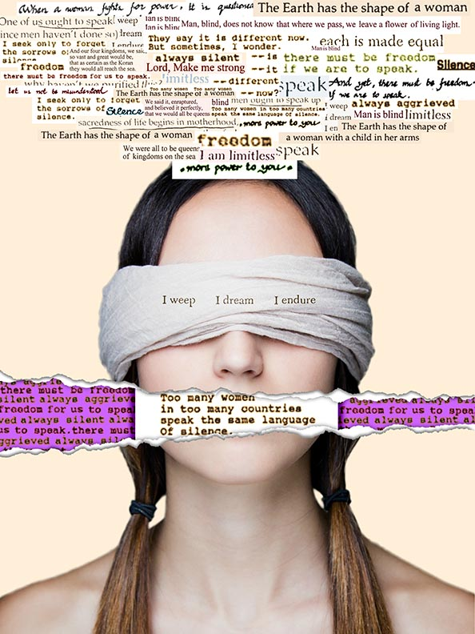

Anjali Suthar
All the Things She Says Which Nobody Hears
Inspired by a poem by Anasuya Sengupta, this poster is a collage of lines from many different poems. Each of the poems addresses topics such as feminism, motherhood, and women’s rights. The words in some of these phrases are rearranged so as to deliver a specific message or to strengthen or clarify what that particular poem was about, or to express a few of my thoughts. The poster, when all the parts of the collage are combined, addresses the fact that women in many parts of the world today still do not have the right to speak and make their voices be heard, and when it is heard, they are ignored or shrugged off. I also have a cultural connection to the topic of silence—in my culture, women are expected to remain in the background, always silent. A good woman doesn’t talk too much, isn’t loud, doesn’t argue, puts her husband’s, children’s, in-law’s needs above her own needs, dreams, ambitions. In the poster, above the woman’s head floats her thoughts, thoughts which are about what she thinks of herself and what she wants to tell to the world but cannot because her right to speak has been taken from her—torn from her.